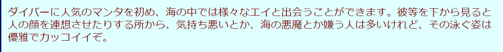

起因是这样的，我刚才看见伦敦篇的视频下面后台有细心朋友回复了这条。（擦区人均列文虎克）
我本以为是中文的“魔鬼鱼”外号，引发的联想。然后去wiki找英文学名再跳转日文词条，最终日语的称谓确实有
オニ开头（鬼的片假名，详见红修篇DLC）
汉字词也确实是：オニイトマキエイ（鬼糸巻鱝、鬼糸巻鱏、学名: Mobula birostris）
我本以为是中文的“魔鬼鱼”外号，引发的联想。然后去wiki找英文学名再跳转日文词条，最终日语的称谓确实有
オニ开头（鬼的片假名，详见红修篇DLC）
汉字词也确实是：オニイトマキエイ（鬼糸巻鱝、鬼糸巻鱏、学名: Mobula birostris）
2023-11-16 15:37 | 南英的茶馆:经过细心吧友提供原词条マダラトビエイ后，发现是同科下的不同属，故作为 オニ 鬼糸巻鱝 的指代并不可靠，具体的指代和查阅勘误过程放在28楼，请查阅。2023-11-16 15:48 | 南英的茶馆:总而言之，斑点鹰鳐 温和 近危 胆小，与魔鬼鱼鬼蝠鱼同属于鳐总目，特点是有斑点，天敌是【鲨鱼】。2023-11-16 15:50 | 南英的茶馆:被翻译带到沟里去了，下次汲取教训先查原文....2023-12-18 19:44 | 1412704013B:回复 南英的茶馆 :太绝了，衣服就是这只雪花斑点蝠鲼，天敌鲨鱼
是的，所以我信satan论
兰：你看我衣服怎么样
新一.：挺好的...
兰：只是这样吗？
新一：你想知道具体评价的话去问妈妈。
兰：噫？
新一（青山）：好厉害！有只斑点燕魟！
新一.：挺好的...
兰：只是这样吗？
新一：你想知道具体评价的话去问妈妈。
兰：噫？
新一（青山）：好厉害！有只斑点燕魟！
2023-11-16 14:29 | 南英的茶馆:原b站用户的回复评论出现在23楼⊙▽⊙
这算是，借物喻人....?
毕竟这也是鲨鱼论比喻的地方。
毕竟这也是鲨鱼论比喻的地方。
妙哉妙哉，双鲨共舞，魔鬼鱼独自游弋。
支持新发现，补一下更清晰的漫画图~
2023-11-16 12:07 | 南英的茶馆:够清晰，感谢2023-11-16 15:51 | 南英的茶馆:28楼勘误了，同时求问这是哪一版翻译，好精准....2023-11-16 22:01 | 浩宇睿渊:回复 南英的茶馆 :很严谨呢，这个就是台湾青文出版社的版本，我一般会和长春出版社的翻译对照着看，因为感觉两边各有优劣。 链接就私发给你咯，如果有帮助的话~2023-11-17 03:25 | 黑礼帽的誓言:说起来衣服花色跟这个鱼是一样的

不过我不太认为这种称号会被用到正作里，
在“评价衣服”的过程中突然一转的话题更像是红修篇DLC提到的青山借角色和剧情碎碎念的“弦外之音”。
兰在后续剧情黑化变黑之类的事实上不可能，
一来故事的余量空间不够了，二来她在柯学宇宙就是一个普通女孩。
到最后哪怕是新兰结局，也是主角回归一个JKDK式的日常生活，
进入大学，毕业，一起变成无趣的大人，这样。
但是不得不说的是青山是真的搞......
在“评价衣服”的过程中突然一转的话题更像是红修篇DLC提到的青山借角色和剧情碎碎念的“弦外之音”。
兰在后续剧情黑化变黑之类的事实上不可能，
一来故事的余量空间不够了，二来她在柯学宇宙就是一个普通女孩。
到最后哪怕是新兰结局，也是主角回归一个JKDK式的日常生活，
进入大学，毕业，一起变成无趣的大人，这样。
但是不得不说的是青山是真的搞......
2023-11-16 10:49 | 魔羯的眼:那么如果兰的初恋是还没出现的黑方人物呢'这个可能性有没有2023-11-16 10:51 | 贴吧用户_568ttyK:回复 魔羯的眼 :目前来说，兰的初恋很有可能是赤井（涟漪篇），所以初恋的事大概不会再提了2023-11-16 10:58 | 魔羯的眼:回复 贴吧用户_568ttyK :但是关于兰的恶魔'撒旦论挺多的'如果不能黑化兰'那么是不是就是指兰身边有关于恶魔的什么'秀一的话好像和恶魔又撤不上什么关系2023-11-16 11:00 | 魔羯的眼:回复 贴吧用户_568ttyK :现在看来和小时候的兰与秀一也就一面之缘'第二次见面兰还没认出来真的能有初恋的感觉吗2023-11-16 11:06 | 南英的茶馆:回复 魔羯的眼 :看我楼下的解释，青山大概率是用词玩梗，在我的观感里他这个人的作品并不流露出特定的宗教偏好，大概率是使用某个词汇作为工具。像箭头一样有上下的朝向，但是没有具体的延申（神话语境符合的）内涵。2023-11-17 00:25 | 无需知道♀:回复 魔羯的眼 :你别说，还真有一部人气不低漫画的最终boss就是女主的初恋，但是这个角色被很多人认为是一个败笔（我也这么认为）2023-11-17 20:00 | 贴吧用户_568ttyK:回复 魔羯的眼 :可以重看一下涟漪篇，只看有兰的部分，那可不是一面之缘那么简单，当然兰后面也不记得了2023-11-17 20:39 | 魔羯的眼:回复 贴吧用户_568ttyK :虽然是被帅气的救了呢'但是感觉兰被保护不会在她心里留下什么深刻印象2024-02-15 05:15 | feather034:可以在身世上做文章，也许角姐不是毛妃亲生女儿，而是组织里某个高层的私生女也说不定2024-02-20 20:38 | 陈酿青梅酒:不然当初灰原为何要逃避她呢，我感觉以会员的性格不仅仅是因为自己喜欢柯，而柯喜欢兰吧，况且灰原父母说的让她震惊的话这个伏笔还没回收呢
回复 feather034 :这样的话剧情转折太生硬了之前半点暗示都没有，还不如说玛利亚是酒厂高层亲戚靠谱一点

讲道理8年前(？)的审美也不应该是高中生穿蓝色波点连衣裙吧，我看的时候对兰姐的审美也产生了深深的不理解
2023-11-17 03:29 | 江风一孤同:而且这种点花纹的裙子看漫画画面还可能容易引起密恐，一般来说也不太会穿这种裙子，要么是碎花裙要么波点大一点稀疏一点，或者直接做成细密的黑白格🤔2023-11-17 06:16 | 肉鸡214:你要看作者是哪个年代的人才行2023-11-18 08:49 | 南英的茶馆:回复 肉鸡214 :青山认真画衣服并不土的，比如哀的衣服，有很明显的在时装杂志找参考的痕迹，如果把小孩版型的设计拉大，衣品搞不好压园子一头。2023-11-18 08:55 | 肉鸡214:回复 南英的茶馆 :然而斑点服确是80甚至90年代最盛行的服装，也是潮流的象征。小兰原型的静香也是穿过上电视的。话说对小哀上心不很正常吗？还有他都要做隐喻，这衣服不是他认为合适的。2023-12-19 04:54 | BornToDie夏伤:回复 肉鸡214 :啊 可能这个造型是有参考 不过 我好像听说菊池桃子是兰姐的原型2023-12-19 04:56 | BornToDie夏伤:回复 肉鸡214 :啊啊 找到了 73访谈：“总之，我自身是喜欢自立的女孩子这样的吧。年轻时开始喜欢的女艺人也是菊池桃子、中森明菜、以及小泉今日子这样的。我笔下的女孩子大致能分成这三类。比如兰是桃子、灰原是明菜、世良和园子是今今（指小泉今日子）这样子呢。”
以天使称号的开头纽约篇为例。
给我的感觉更像是兰作为一个普通女孩在寻找一种“被救赎”的可能，因为她认为是她的善造成了恶。
各位别太管日文文化语境下的satan所指的西洋语境的邪恶。就日本核心神明文化而言，“两仪性”是很重要的一点。在不同的语境下正邪会反转，敌我同源，神仙能做好事也能干坏事，这样。
比如邮件里的名台词我们是上帝也是魔鬼，就是很明显的符合日文语境的两面性。
青山应该是想表达对兰“毫无恶意的”善，最终导致恶的结果。
不过说到底也是作者对于角色的恶意。
给我的感觉更像是兰作为一个普通女孩在寻找一种“被救赎”的可能，因为她认为是她的善造成了恶。
各位别太管日文文化语境下的satan所指的西洋语境的邪恶。就日本核心神明文化而言，“两仪性”是很重要的一点。在不同的语境下正邪会反转，敌我同源，神仙能做好事也能干坏事，这样。
比如邮件里的名台词我们是上帝也是魔鬼，就是很明显的符合日文语境的两面性。
青山应该是想表达对兰“毫无恶意的”善，最终导致恶的结果。
不过说到底也是作者对于角色的恶意。
2023-11-16 11:10 | 南英的茶馆:事实上对于很多读者而言，兰让人窝火的地方也确实在于这里。她一本正经的干了不算错的事情，但是在剧情上却卡在那个位置，让人感觉难受、阅读受到了阻碍。比如纽约篇进入后台调查现场，兰会像普通女孩一样担心“违规跑到这里被发现了就不好了”，这是很正常的道德观，但唯独就不适合卡在女主的位置。
【以上】
感觉大家对【撒旦】的理解还是太宏大了，觉得不是十恶不赦的反派人物就不可以安排这个称号。
我举个例子，比如一个人想要【减肥】，那么【汉堡炸鸡奶茶】对那个人来说就是【撒旦】，但【高热量食品】本身实际上并不是什么十恶不赦的东西，甲之砒霜，乙之蜜糖嘛。
安排给小兰的【撒旦】也就是这么一种意思。
我举个例子，比如一个人想要【减肥】，那么【汉堡炸鸡奶茶】对那个人来说就是【撒旦】，但【高热量食品】本身实际上并不是什么十恶不赦的东西，甲之砒霜，乙之蜜糖嘛。
安排给小兰的【撒旦】也就是这么一种意思。
2023-11-16 11:16 | 南英的茶馆:见11楼的回复，一般作为中文语境的情况下讨论这个词会被对待成严肃意义的satan。但青山很显然是把各种要素杂糅成一个代表恶的鬼神，而且这种恶还是会在善恶之间反转的表述。堕天使 天使 修罗天狗（鬼） 战胜其它恶鬼 邮件的我们既是也是... 都是在表达一种反转，相比之下兰只是其中很少很少的一点点。2023-11-16 11:20 | 此生欲与江湖老:回复 南英的茶馆 :我表达的不清楚！我是非常赞同你的看法的(你的作品我都看了)！我这段实际上是回复给我看到的在你其他作品里底下发表，和文吧里其他一些不赞同的，说【不至于，作者不至于这样描写小兰】和【说小兰是撒旦给小兰抬咖】等等的人2023-11-16 11:26 | 南英的茶馆:回复 此生欲与江湖老 :嗯嗯，就是在懂了你的比喻的情况下，进一步举例青山在作品中用到的类似的手法，类似于箭头的↑↓，只有朝向但没有具体判断。比如汉堡可以保持能量充饥，也能导致肥胖。这样。(￣▽￣)o2023-11-16 14:52 | 夜瞳秒:
嘶...
转念一想，现在朗姆篇确实是 读者比柯南先知道朗姆是谁。
那么剧情上就不是【跟着主角的眼睛解开真相】，
而是【作为旁观者胆战心惊的看主角遭遇什么突发情况】，
最后难道真是兰对朗姆把新一的事情爆了？
转念一想，现在朗姆篇确实是 读者比柯南先知道朗姆是谁。
那么剧情上就不是【跟着主角的眼睛解开真相】，
而是【作为旁观者胆战心惊的看主角遭遇什么突发情况】，
最后难道真是兰对朗姆把新一的事情爆了？
2023-11-16 12:31 | 缕陈好:1057话柯南在厨子面前提新一就有点自曝。如果不是羽田案青山把朗姆画成了一个小丑，以之前朗姆体现出的智商水平和现在朗姆已经知道a药效果的情况下，柯南的处境已经相当危险。毕竟识别出柯南身份算是整部作品的智商分水岭，如果为了维持住朗姆的b格，那让他自己推断出来更合理2023-11-16 12:32 | 缕陈好:这样就没有毛利兰给厨子提供关键线索完成临门一脚的必要性。但现在各方都在查新一，说不准毛利兰暴露了新一但没有把信息暴露给黑方呢2023-11-16 17:32 | 世界上没有真理:她只要再來一次倫敦篇那樣的情緒失控，她就是惡魔
我打字口气是不是有点凶...？
2023-11-16 11:57 | 气质新☜:不凶 爱看2023-11-16 14:54 | 夜瞳秒:有一点点凶……只是一点点哦~
2023-11-16 11:36 | Chaos🌐🌸:可要真是兰神暴露的话，透子也会被紧跟着以身边存在这么好套情报的兰神却没套出情报的理由受怀疑，这下真黑色子弹了2023-11-16 11:52 | 创越🔯:回复 Chaos🌐🌸 :而且工藤宅也接着暴露，这点也很致命，水无好不容易塞回去捞情报，暴露了情报全无了2023-11-18 08:19 | 魔羯的眼:突然觉得这次（假）新兰见面'如果事件结束回家后兰当着小五郎朗姆面前抱怨的话2023-11-19 21:02 | Cyh575:大早上，看到这图笑出了声2023-12-25 03:02 | 贴吧用户_JSK1A3P:怀疑红茶会议可能让透子主动上报工藤新一还活着

兰透给朗姆消息其实越想越合理，从仓库老人那里也能看得出来，朗姆是会利用别人的善良打成自己的目的的
2023-11-16 11:54 | 贴吧用户_568ttyK:达成，这个输入法。。。。。2023-11-16 17:28 | 不羡佐鸣:这样说起来，卡迈尔已经闯了好几次祸了2023-11-16 23:33 | 贴吧用户_5726KyK:，能骗过琴酒的假死都整过两回了。。。
这倒是
或者往琴兰角度想想，不会琴酒和兰神以前见过面成初恋了吧（）
2023-11-16 11:51 | 贴吧用户_QV57E9N:突然想到……那个neiku同人文，，，我琴酒啊2023-11-16 11:51 | 别XB乱叫☜:放过琴吧，人好歹还给ca出过力2023-11-16 23:34 | 贴吧用户_5726KyK:琴酒被黑得最惨的一次2023-12-19 02:36 | Trapphonk:琴酒被黑得最惨的一次


我艹太特么搞了
好好好，狠狠的暴杀呀
感谢大佬翻牌我的评论
我手边没有日版漫画，不知道原著如何，不过听动画配音这里似乎是“マダラトビエイ”（斑点鹰魟），和“オニイトマキエイ”（蝠鲼）似乎还不能说完全是同种。
不过所有的“エイ”（鳐，鲼，魟）都可以称之为“海の悪魔”，或许只是青山并没有对应到“鬼糸巻鱝”的程度。
我手边没有日版漫画，不知道原著如何，不过听动画配音这里似乎是“マダラトビエイ”（斑点鹰魟），和“オニイトマキエイ”（蝠鲼）似乎还不能说完全是同种。
不过所有的“エイ”（鳐，鲼，魟）都可以称之为“海の悪魔”，或许只是青山并没有对应到“鬼糸巻鱝”的程度。

顺便说“エイ”的天敌不就是鲨鱼吗？
2023-11-16 14:31 | 南英的茶馆:唔 原著大佬在下面贴出来了，那就以你这一条为准。 但是外形上都比较趋同就是了（对生物一窍不通orz）。
虽然不知为何，被称为“海中恶魔”的鳐鱼。其中似乎也有外形可怕的。
2023-12-18 19:52 | 1412704013B:腹の部分は笑顔の様子なのに
原文喏
2023-11-16 15:41 | 南英的茶馆:在28楼勘误了，戳戳。
因为マダラトビエイ在wiki上的词条没有中文词条可供跳转，于是问了一下gpt，如果回答无误的话，1楼引用的
オニイトマキ【エイ】（大仁糸巻鱝）和マダラトビ【エイ】（斑翅鱝）是两种不同的鳐鱼，它们在外观和生态方面有一些区别。
以下是它们的主要异同：
外观：
オニイトマキエイ相对较大，身体扁平。它的体色较暗，背部有斑纹。
マダラトビエイ的体型呈圆盘状，背部有独特的斑点图案，这些斑点由深浅不一的颜色交替组成。
生存环境：
オニイトマキエイ主要栖息在沿海区域和珊瑚礁附近的浅海域。
マダラトビエイ生活在深海，通常在深海底部找到它们的栖息地。
生态：
オニイトマキエイ是底栖动物，主要在海底隐藏并等待猎物。当发现猎物时，它们会迅速袭击。
マダラトビエイ也是底栖动物，常常潜藏在底泥中等待猎物。
体型：
オニイトマキエイ有一个扁平而展开的圆盘状体型。
マダラトビエイ也有圆盘状的体型，但其形状与オニイトマキエイ不同。
这些是一般特征，个体和物种之间可能存在变异。生存环境和食物供应等因素也可能影响它们的外观和行为。
作为鱼的分类【エイ】这个词跳转到中文词条是鳐总目：
オニイトマキ【エイ】（大仁糸巻鱝）和マダラトビ【エイ】（斑翅鱝）是两种不同的鳐鱼，它们在外观和生态方面有一些区别。
以下是它们的主要异同：
外观：
オニイトマキエイ相对较大，身体扁平。它的体色较暗，背部有斑纹。
マダラトビエイ的体型呈圆盘状，背部有独特的斑点图案，这些斑点由深浅不一的颜色交替组成。
生存环境：
オニイトマキエイ主要栖息在沿海区域和珊瑚礁附近的浅海域。
マダラトビエイ生活在深海，通常在深海底部找到它们的栖息地。
生态：
オニイトマキエイ是底栖动物，主要在海底隐藏并等待猎物。当发现猎物时，它们会迅速袭击。
マダラトビエイ也是底栖动物，常常潜藏在底泥中等待猎物。
体型：
オニイトマキエイ有一个扁平而展开的圆盘状体型。
マダラトビエイ也有圆盘状的体型，但其形状与オニイトマキエイ不同。
这些是一般特征，个体和物种之间可能存在变异。生存环境和食物供应等因素也可能影响它们的外观和行为。
作为鱼的分类【エイ】这个词跳转到中文词条是鳐总目：
故此，1楼中选用的词条并不正确，
受翻译影响顺着魟鱼跑到了オニイトマキエイ，
故一二楼论述的：“鬼”相关的引申存疑。
但两种鱼属于一个科目下的不同属类（トビエイ科），
这也是翻译看错的一个原因。
（求个生物系大佬救救，再专业的就看不懂了。）
（严格来说是因为词条对应不明确难以翻译，以下是具体说明↓）
经过吧友提出原文后对原单词【マダラトビエイ】进行了查询，但日文词条并没有中文供准确跳转，于是查询日文解释中的英文，然后从英文反向跳跃中文词条。
Aetobatus ocellatus
Aetobatus narinari
然后在这两个词条上开始了摇摆，
（我认为青山本人应该对具体的生物分类没有太了解，是选取了日文已有的单词。）
根据英文和相关简繁中的对照，目前来看应该是【斑点鹰鳐】。
根据相关英文和日文词条的综合描述，
该鱼【温和】【近危】【胆小】，天敌是【鲨鱼】。
（所以为什么会养在一起...）
受翻译影响顺着魟鱼跑到了オニイトマキエイ，
故一二楼论述的：“鬼”相关的引申存疑。
但两种鱼属于一个科目下的不同属类（トビエイ科），
这也是翻译看错的一个原因。
（求个生物系大佬救救，再专业的就看不懂了。）
（严格来说是因为词条对应不明确难以翻译，以下是具体说明↓）
经过吧友提出原文后对原单词【マダラトビエイ】进行了查询，但日文词条并没有中文供准确跳转，于是查询日文解释中的英文，然后从英文反向跳跃中文词条。
Aetobatus ocellatus
Aetobatus narinari
然后在这两个词条上开始了摇摆，
（我认为青山本人应该对具体的生物分类没有太了解，是选取了日文已有的单词。）
根据英文和相关简繁中的对照，目前来看应该是【斑点鹰鳐】。
根据相关英文和日文词条的综合描述，
该鱼【温和】【近危】【胆小】，天敌是【鲨鱼】。
（所以为什么会养在一起...）
2023-11-16 20:11 | 不重则不威◎:回复 思想自由的精灵 :捡漏......话说兰神在哀旁边捡漏抢功多少次了

好家伙还能这么玩，73很6
一个发现，666话封面的破案线索是被刮掉的单词fish，加上fish和angel组合，就是Angel Fish天使鱼。
而水族馆篇，就是新一回忆起在等待兰时，身边的鱼缸有天使鱼游过，下一格就是兰出现。


而水族馆篇，就是新一回忆起在等待兰时，身边的鱼缸有天使鱼游过，下一格就是兰出现。
2023-11-17 10:59 | 不见山人不见月:666话么，还真是逢魔时刻啊。本来一直担心73把毛利兰的生日设置为6-6。2023-12-18 19:58 | 1412704013B:消失的鱼儿，一角岩，青里周平那一话吗2023-12-19 08:21 | 寂忆秋:回复 1412704013B :是的2024-02-18 12:37 | LightW☜:这个天使鱼的角……蚌埠住了
这个鱼脑袋上还有个角2333
越挖雷点越多这么一看青山对兰真狠啊
等今天1121图透
新一不好意思直接夸小兰，转头去夸同样有斑点图案的鱼
从青山的角度，应该是想用这种鱼来比喻小兰，所以给小兰穿上了斑点的衣服。楼上也有人说了，从审美来看这件衣服其实不好看
温和胆小，都能和小兰对应上，近危是种族而不是个体的特性，不管，最后一条就是天敌鲨鱼，无论是把她带入各种凶案的新一还是会夺走新一的小哀，都是她的天敌
从青山的角度，应该是想用这种鱼来比喻小兰，所以给小兰穿上了斑点的衣服。楼上也有人说了，从审美来看这件衣服其实不好看
温和胆小，都能和小兰对应上，近危是种族而不是个体的特性，不管，最后一条就是天敌鲨鱼，无论是把她带入各种凶案的新一还是会夺走新一的小哀，都是她的天敌
2023-11-17 08:36 | crjiaqiz:不太像是借着夸鱼来夸兰，新一的性格还没有委婉到那种程度，感觉更像是不想回复她而转移话题2023-11-19 00:04 | 丶呆萌的微光♬:也不至于，其实就是新一想和小兰开个玩笑，类似于“你看有条鱼和你撞衫了耶”这样，但兰get不到，就像甄嬛传里浣碧的“原来王爷喜欢看风筝”一样，浣碧和果郡王还是办过正经流程制度意义上的“夫妇”呢，不比SR更“官配”2023-11-22 10:31 | 顽皮鬼才:？笑死。
你确定？直男一枚难道会拐弯抹角夸一个不上心的女性？2023-11-22 10:33 | 顽皮鬼才:回复 crjiaqiz :柯对除了哀以外的女性都是直男。他对哀以外的女性拐弯抹角，不是说中性的话，就是开有颜色的玩笑。
精彩绝伦
你真的太牛啦
鳐鱼和鲨鱼同属软骨鱼纲，算得上是“近亲”，或者说同类？而且鳐鱼算得上可爱，也在国乙见过用这个比喻女主，可能动画组的意思就是让鲨鱼配鳐鱼，然后删除双鲨。
2023-12-24 23:49 | Z-吉皿:也有道理啊，不管结局怎么样都有说法2024-02-20 20:45 | 陈酿青梅酒:但是魟鱼和鳐鱼不一样啊，鳐鱼看起来挺可爱的，魟鱼去百度搜了下，好邪典

我去，南英佬！

又有输出机会了南室又挥下了他的屠刀
南室又挥下了他的屠刀而且更搞笑的是新一宁愿去关注斑点鱼而不是斑点小兰哈哈哈哈
难道他真的是天才
好像撒旦原本也是天使，不过因为想篡位但失败了给丢去了地狱。
这魔鬼鱼的鱼鳍还真像某个角……
我有一个小小的发现：
贝姐在认证了小兰是angel、柯南是cool guy后，朱蒂问了句“为什么是cool guy而不是cool kid？”
如果按照现在一些猜测，那么工藤新一最终会与柯南合一，成为“cool kid”
如果这样的话贝姐的一个认证就错了，既然能错一个，那么自然也能错第二个，“angel也有可能成为Satan”
贝姐在认证了小兰是angel、柯南是cool guy后，朱蒂问了句“为什么是cool guy而不是cool kid？”
如果按照现在一些猜测，那么工藤新一最终会与柯南合一，成为“cool kid”
如果这样的话贝姐的一个认证就错了，既然能错一个，那么自然也能错第二个，“angel也有可能成为Satan”